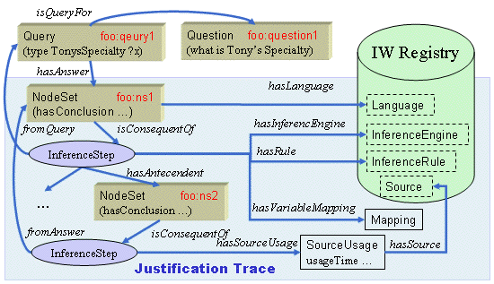

Proof Markup Language

Overview
- Interlingua for representing and sharing explanations
- Sources ... web-based Q&A, text analysis, logical reasoning,
task processors, web services, ML, etc.
- 3 modules
- Provenance - records properties of entities used
- Justification - encodes justifications for conclusions
- Trust - explains belief assertions
- PML classes are OWL classes, hence XML
(personal opinion)
NodeSets and InferenceSteps
- URI identifier
- Conclusion
- Language information
- Any number of inference steps justifying the conclusion
- Antecedent NodeSets
- Inference rule and engine
- Variable bindings, discharged assumptions
- Original sources, time stamp
Multiple Proofs
- Multiple inference steps capture multiple proofs
- Single proofs can be extracted